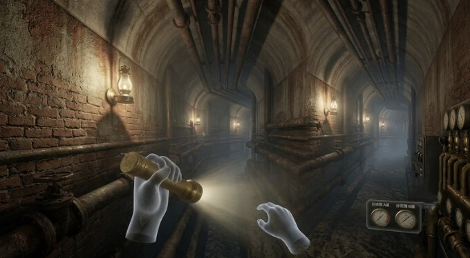
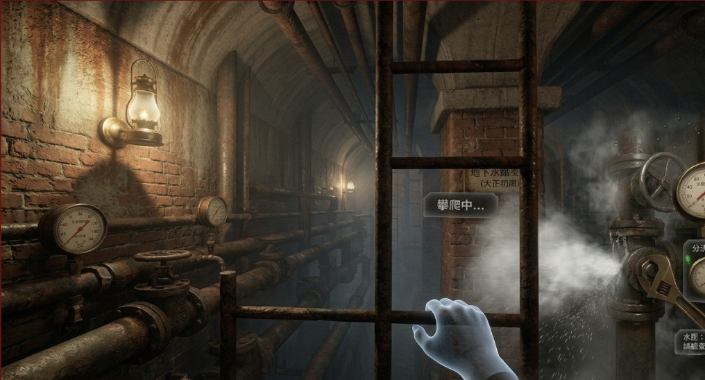

복잡하게 얽힌 미로 같은 붉은 벽돌 지하 수로를 탐험합니다. 고압의 스팀과 물이 새어 나오는 고장 난 파이프 시스템을 직접 수리해 나가는 여정입니다.


생생한 현장감과 난이도: 스테이지 2는 본 게임에서 가장 박진감 넘치는 액션과 피지컬을 요구합니다. 파이프가 터지며 뿜어져 나오는 하얀 증기는 플레이어의 시야를 방해하므로, 재빨리 렌치를 사용해 밸브 접합부를 고정해야 합니다. 어두운 수로 바닥에 흐르는 물의 파장과 소리가 3D 공간 음향으로 전달되어 극도의 긴장감을 제공합니다.
💡 수리 가이드: 스팀 분출구 근처에 표시되는 게이지 화살표가 녹색 범위를 가리킬 때까지 렌치를 리드미컬하게 회전시켜 주어야 완벽히 수리됩니다.